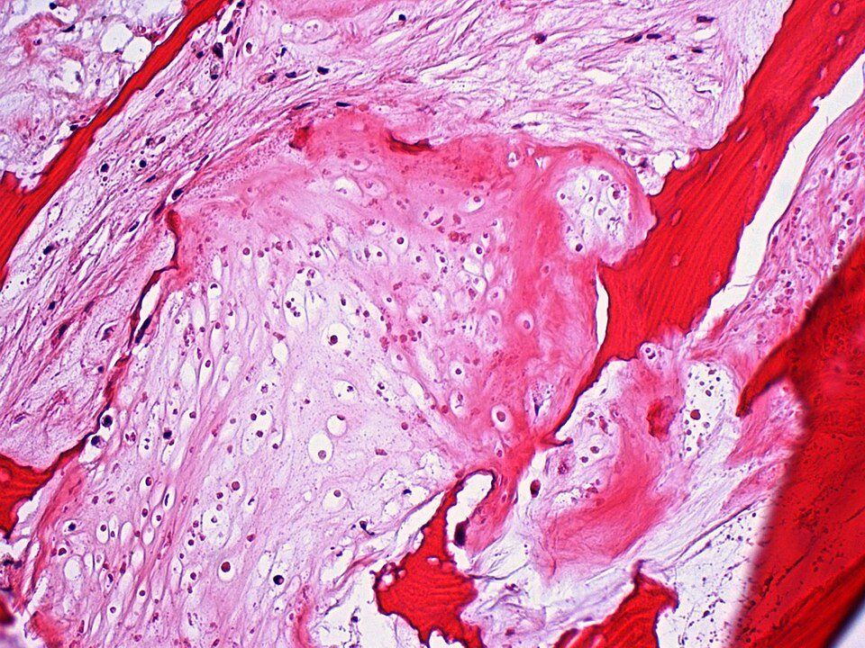

General information only. It does not replace advice from your care team and should not be used to choose a treatment.


At a glance
| Who | Adults aged 40-70 |
| Where | Pelvis, femur, humerus, ribs |
| Alterations | IDH1/IDH2 mutations in half; Ollier and Maffucci syndromes |
| Treatment | Surgery with wide margins; curettage for low-grade limb tumours |
Key points
- Low-grade tumours (atypical cartilaginous tumour in the limbs) grow very slowly and rarely spread.
- High-grade and dedifferentiated tumours are aggressive.
- Very resistant to chemotherapy and conventional radiotherapy; proton therapy is used at the skull base.
- IDH inhibitors (ivosidenib) are being studied in mutated tumours.
See also: Osteosarcoma, Sarcomas.
History · Medicapedia
Chondrosarcoma in the history of medicine
How it was discovered, who studied it and how its treatment changed over the centuries, told on Medicapedia, our sister site on the history of medicine.
Read the history on Medicapedia ↗Sources
- Strauss SJ, et al. Bone sarcomas: ESMO-EURACAN-GENTURIS-ERN PaedCan Clinical Practice Guideline. Ann Oncol. 2021;32:1520-1536.
- NCI. Chondrosarcoma. cancer.gov